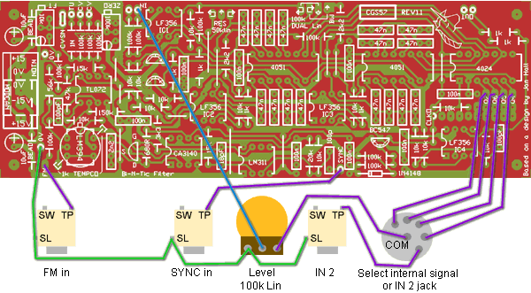

|
Bi-N-Tic Filter for music synthesizers.
The current version can be found here.
A little on how it works:
This filter is based on the original idea by Jan Hall, as presented in Electronotes EN92 P14-15, which was in turn based on an idea in a 1974 issue of Electronic Design on a Biquart (twice the order) filter. A VCO drives a pair of analog switches, switching two banks of eight 0.047uF (47nF) capacitors across op-amps (effectively creating multiple integrators), and this a multi-passband or comb filter is created at f0, f1, f2 etc.. The overall filter configuration itself should be easily recognized. Two controls are provided within the structure of the filter - damping and bandwidth. Not all combinations of these two are actually valid, some resulting in silence, but none the less, quite an array of variations is possible. The VCO section has been re-vamped, based on the well known Electronotes ENS-76 VCO Option 1 as used in the ASM-1, Modulus, etc. This core was an obvious choice due to the amount of information, lists of suitable substitutes and so on that are available on the web. In this case, a cut-down version is used as its purpose was simply to drive the analog switches. The VCO is connected via a signal processor to the input of a 4024 binary counter. The first three divisions are used to drive the address lines of the 4051 analog switches. While not shown on the circuit diagram, the remaining divider outputs are also available. They are not buffered, and are thus not suitable for connection to panel jacks, but they can be wired to a rotary switch, followed by a level pot, and fed back into the input of the filter itself, thus giving the filter an excitation signal that is perfectly in sync with its operating frequency. When configured like this, the filter becomes a very unusual oscillator giving quite complex, waveforms or even simple waveform sequences (ringing bursts).
Construction

Before you start assembly, check the board for etching faults. Look for any shorts between tracks, or open circuits due to over etching. Take this opportunity to sand the edges of the board if needed, removing any splinters or rough edges. (With the boards supplied by me, the edges are already milled, and etching faults are very rare.) When you are happy with the printed circuit board, construction can proceed as normal, starting with the resistors first, followed by the IC socket if used, then moving onto the taller components. Take particular care with the orientation of the polarized components such as electrolytics, diodes, transistors and ICs. When inserting ICs into sockets, take care not to accidentally bend any of the pins under the chip. Also, make sure the notch on the chip is aligned with the notch marked on the PCB overlay. While LF356 op-amps have been specified, any single op-amp should be suitable. TL071, TL081 etc. certainly work in the circuit. Notes:
Parts list This is a guide only. Parts needed will vary with individual constructor's needs. If anyone is interested in buying these boards, please check the PCBs for Sale page to see if I have any in stock.
Can't find the parts? See the parts FAQ to see if I've already answered the question. Also see the CGS Synth discussion group.
Article, art & design copyright 2004 by Ken Stone
| |||||||||||||||||||||||||||||||||||||||||||||||||||||||||||||||||||||||||||||||||||||||||||